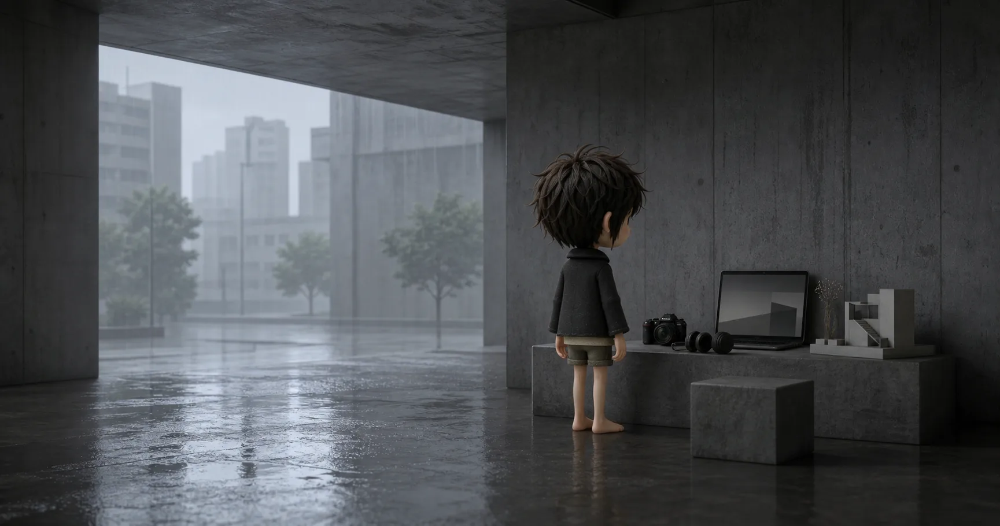

Selected works / 01
ZHILIAO.HUB — ARCHIVE 01
从影像、声音到软件，把做过的尝试放在同一条安静的街道上。每个分类都有自己的入口，也为后续内容继续留出空间。

PROGRAM / SOFTWARE
企业知识库RAG+Agent系统。知天与知了hub 保持独立仓库和独立部署，本站当前只提供作品条目与详情占位。
围绕个人知识与创作整理的软件作品。当前只建立展示骨架，功能说明与开发记录仍在整理。
面向个人记录与时间回望的软件作品。当前只建立展示骨架，功能说明与开发记录仍在整理。
以信息层级和交互细节打磨网页体验。当前详情页已建立，案例画面与设计记录仍在整理。
FILM / MEDIA
收集角色、场景与物件的三维建模练习。当前详情页已建立，模型展示和制作记录仍在整理。
用生成式影像探索短片叙事与视觉节奏。当前详情页已建立，成片与生成过程仍在整理。
记录从旋律构思到生成编曲的声音实验。当前详情页已建立，试听内容与制作记录仍在整理。
把音乐、节奏与片段重新编排成一段个人表达。当前详情页已建立，具体作品与制作记录仍在整理。
LIFE / DAILY
生活类作品还在路上，欢迎稍后再来看看。